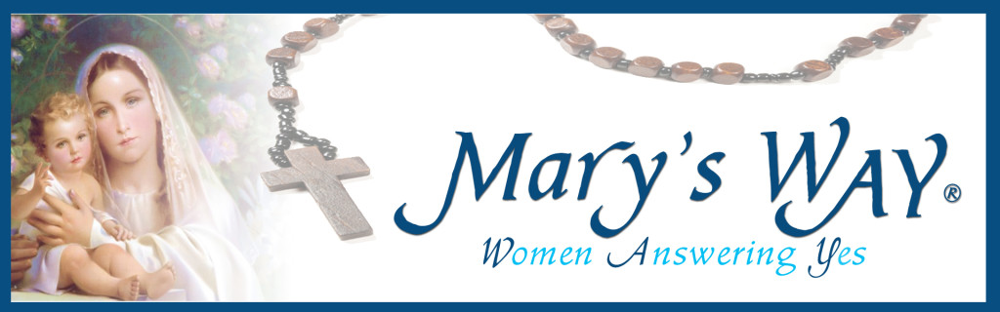

“Pray, pray very much, and make sacrifices for sinners.” ~ Mary at Fatima, October 13, 1917
Our Mission
Mary’s WAY® is a woman’s event which strives to deepen our Catholic faith by uniting souls more closely to Jesus Christ.
Parish & Events
Find a parish near you and join us in honoring Mary’s Virtues and Obedience to God.
Prayer Corner
By praying, we give God a definite place in our lives, openly allowing His grace to transform us by strengthening our faith and trust in Him.